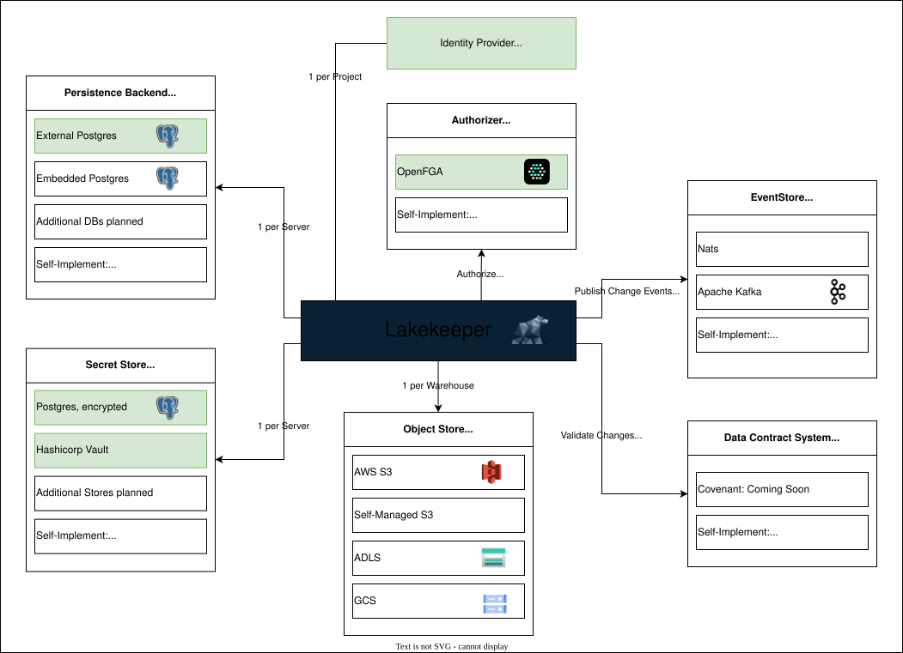

Concepts¶
Architecture¶
Lakekeeper is an implementation of the Apache Iceberg REST Catalog API. Lakekeeper depends on the following, partially optional, external dependencies:

- Persistence Backend / Catalog (required): We currently support only Postgres, but plan to expand our support to more Databases in the future.
- Warehouse Storage (required): When a new Warehouse is created, storage credentials are required.
- Identity Provider (optional): Lakekeeper can authenticate incoming requests using any OIDC capable Identity Provider (IdP). Lakekeeper can also natively authenticate kubernetes service accounts.
- Authorization System (optional): For permission management, Lakekeeper uses the wonderful OpenFGA Project. OpenFGA is automatically deployed in our docker-compose and helm installations. Authorization can only be used if Lakekeeper is connected to an Identity Provider.
- Secret Store (optional): By default, Lakekeeper stores all secrets (i.e. S3 access credentials) encrypted in the Persistence Backend. To increase security, Lakekeeper can also use external systems to store secrets. Currently all Hashicorp-Vault like stores are supported.
- Event Store (optional): Lakekeeper can send Change Events to an Event Store. Currently Nats is supported, we are working on support for Apache Kafka
- Data Contract System (optional): Lakekeeper can interface with external data contract systems to prohibit breaking changes to your tables.
To get started quickly with the latest version of Lakekeeper check our Getting Started Guide.
Entity Hierarchy¶
In addition to entities defined in the Apache Iceberg specification or the REST specification (Namespaces, Tables, etc.), Lakekeeper introduces new entities for permission management and multi-tenant setups. The following entities are available in Lakekeeper:

Project, Server, User and Roles are entities unknown to the Iceberg Rest Specification. Lakekeeper serves two APIs:
- The Iceberg REST API is served at endpoints prefixed with
/catalog. External query engines connect to this API to interact with the Lakekeeper. Lakekeeper also implements the S3 remote signing API which is hosted at/<warehouse-id>/v1/aws/s3/sign. - The Lakekeeper Management API is served at endpoints prefixed with
/management. It is used to configure Lakekeeper and manage entities that are not part of the Iceberg REST Catalog specification, such as permissions.
Server¶
The Server is the highest entity in Lakekeeper, representing a single instance or a cluster of Lakekeeper pods sharing a common state. Each server has a unique identifier (UUID). By default, this Server ID is set to 00000000-0000-0000-0000-000000000000. It can be changed by setting the LAKEKEEPER__SERVER_ID environment variable. We recommend to not set the Server ID explicitly, unless multiple Lakekeeper instances share a single Authorization system. The Server ID must not be changed after the initial bootstrapping or permissions might not work.
Project¶
For single-company setups, we recommend using a single Project setup, which is the default. Unless LAKEKEEPER__ENABLE_DEFAULT_PROJECT is explicitly set to false, a default project is created during bootstrapping with the nil UUID.
Warehouse¶
Each Project can contain multiple Warehouses. Query engines connect to Lakekeeper by specifying a Warehouse name in the connection configuration.
Each Warehouse is associated with a unique location on object stores. Never share locations between Warehouses to ensure no data is leaked via vended credentials. Each Warehouse stores information on how to connect to its location via a storage-profile and an optional storage-credential.
Warehouses can be configured to use Soft-Deletes. When enabled, tables are not eagerly deleted but kept in a deleted state for a configurable amount of time. During this time, they can be restored. Please note that Warehouses and Namespaces cannot be deleted via the /catalog API if child objects are present. This includes soft-deleted Tables. A cascade-drop API is added in one of the next releases as part of the /management API.
Namespaces¶
Each Warehouses can contain multiple Namespaces. Namespaces can be nested and serve as containers for Namespaces, Tables and Views. Using the /catalog API, a Namespace cannot be dropped unless it is empty. A cascade-drop API is added in one of the next releases as part of the /management API.
Tables & Views¶
Each Namespace can contain multiple Tables and Views. When creating new Tables and Views, we recommend to not specify the location explicitly. If locations are specified explicitly, the location must be a valid sub location of the storage-profile of the Warehouse - this is validated by Lakekeeper upon creation. Lakekeeper also ensures that there are no Tables or Views that use a parent- or sub-folder as their location and that the location is empty on creation. These checks are required to ensure that no data is leaked via vended-credentials.
Users¶
Lakekeeper is no Identity Provider. The identities of users are exclusively managed via an external Identity Provider to ensure compliance with basic security standards. Lakekeeper does not store any Password / Certificates / API Keys or any other secret that grants access to data for users. Instead, we only store Name, Email and type of users with the sole purpose of providing a convenient search while assigning privileges.
Users can be provisioned to Lakekeeper by either of the following endpoints:
- Explicit user creation via the POST
/management/userendpoint. This endpoint is called automatically by the UI upon login. Thus, users are "searchable" after their first login to the UI. - Implicit on-the-fly creation when calling GET
/catalog/v1/config. This can be used to register technical users simply by connecting to the Lakekeeper with your favorite tool (i.e. Spark). The initial connection will probably fail because privileges are missing to use this endpoint, but the user is provisioned anyway so that privileges can be assigned before re-connecting.
Roles¶
Projects can contain multiple Roles, allowing Roles to be reused in all Warehouses within the Project. Roles can be nested arbitrarily, meaning that a role can contain other roles within it. Roles can be provisioned automatically using the /management/v1/role endpoint or manually created via the UI. We are looking into SCIM support to simplify role provisioning. Please consider upvoting the corresponding Github Issue if this would be of interest to you.
Dropping Tables¶
Currently all tables stored in Lakekeeper are assumed to be managed by Lakekeeper. The concept of "external" tables will follow in a later release. When managed tables are dropped, Lakekeeper defaults to setting purgeRequested parameter of the dropTable endpoint to true unless explicitly set to false. Currently most query engines do not set this flag, which defaults to enabling purge. If purge is enabled for a drop, all files of the table are removed.
Soft Deletion¶
In Lakekeeper, warehouses can enable soft deletion. If soft deletion is enabled for a warehouse, when a table or view is dropped, it is not immediately deleted from the catalog. Instead, it is marked as dropped and a job for its cleanup is scheduled. The table is then deleted after the warehouse specific expiration delay has passed. This will allow for a recovery of tables that have been dropped by accident. "Undropping" a table is only possible if soft-deletes are enabled for a Warehouse. The expiration delay is determined at the time of dropping the table, that means changing the delay in the warehouse settings will only affect newly dropped tables. If you want "soft-deleted" tables to be gone faster, undrop the tables, change the expiration delay and re-drop them.
Migration¶
Migration is a crucial step that must be performed before starting the Lakekeeper. It initializes the persistent backend storage and, if enabled, the authorization system.
For each Lakekeeper update, migration must be executed before the serve command can be called. This ensures that all necessary updates and configurations are applied to the system. It is possible to skip Lakekeeper versions during migration.